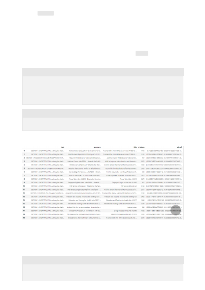

yet. The n_tokens column is simply a way of making sure none of the data we pass to
the model for tokenization and embedding exceeds the input token limit of 8,192. When
we pass the documents to the embeddings model, it will break the documents into
tokens similar (though not necessarily identical) to the examples above and then convert
the tokens to a series of floating point numbers that will be accessible via vector search.
These embeddings can be stored locally or in an Azure Database. As a result, each bill
will have its own corresponding embedding vector in the new ada_v2 column on the
right side of the DataFrame.
Python
Python
Output:
As we run the search code block below, we'll embed the search query "Can I get
information on cable company tax revenue?" with the same text-embedding-ada-002
(Version 2) model. Next we'll find the closest bill embedding to the newly embedded
text from our query ranked by cosine similarity.
Python
df_bills['ada_v2'] = df_bills["text"].apply(lambda x : get_embedding(x,
engine = 'text-embedding-ada-002')) # engine should be set to the deployment
name you chose when you deployed the text-embedding-ada-002 (Version 2)
model
df_bills
# search through the reviews for a specific product
def search_docs(df, user_query, top_n=3, to_print=True):
{kind=link}